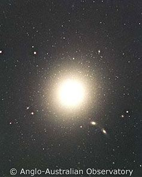

A cD galaxy is an elliptical galaxy that possesses an extended stellar halo, sometimes measuring as much as 3 million light years in diameter. Usually located at the centres of galaxy clusters, cD galaxies are believed to result from the merger of many small galaxies with the central brightest cluster galaxy. This increases the mass of the central galaxy, and also adds stars to the extended halo. Evidence in support of this minor merger scenario can be found in the centres of some cD galaxies, where multiple galactic nuclei are observed. In addition, some cD galaxies have actually been caught in the process of ‘cannibalising’ smaller galaxies.
cD galaxies constitute some of the most massive galaxies in the Universe and possess a narrow range of luminosities. They can therefore be used as standard candles to estimate distances to clusters.